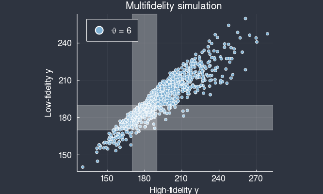

Stochastic Systems Biology: Theory and Simulation
SMB 2021, 16 June 2021
Prescott and Baker. Multifidelity approximate Bayesian computation. SIAM/ASA Journal of Uncertainty Quantification 8:114 (2020)
Prescott and Baker. Multifidelity approximate Bayesian computation with sequential Monte Carlo parameter sampling. JUQ, in press (2021)
See tppres.co.tt for links, including to these slides.
Map prior, $\pi(\theta)$, to posterior, $\pi(\theta~|~x_{\mathrm{obs}})$.
Bayes' rule: $\pi(\theta~|~ x_{\mathrm{obs}}) \propto L(\theta) \pi(\theta).$
The likelihood $L(\theta) = f(x_{\mathrm{obs}}~|~\theta)$ often cannot be calculated.
Bayes' rule: $\pi(\theta~|~ x_{\mathrm{obs}}) \propto L(\theta) \pi(\theta)$.
Approximate $L(\theta) \approx \hat L(\theta)$ with a function that can be calculated, or estimated, based on model simulations:
Parametrised model simulations: $y \sim f(\cdot~|~\theta)$.
Neighbourhood of data: $\Omega = \{ y~:~d(y,x_{\mathrm{obs}})<\epsilon \}$ for some distance, $d$, and threshold, $\epsilon$.
Approximate the likelihood: \[ \hat L_{\mathrm{ABC}}(\theta) = \mathbf P(y \in \Omega~|~\theta). \]
Approximate the likelihood, \[ \hat L_{\mathrm{ABC}}(\theta) = \mathbf P(y \in \Omega~|~\theta). \]
This implies an approximate posterior: \[ \pi_{\mathrm{ABC}}(\theta~|~x_{\mathrm{obs}}) \propto \mathbf P(y \in \Omega~|~\theta) \pi(\theta). \]
Example: stochastic time, $y$ seconds, for $\theta$ enzyme molecules to convert 100 substrate molecules into product.
Observed data, $x_{\mathrm{obs}}=180$ seconds.
Options:
These are not mutually exclusive—see Prescott and Baker (JUQ 2021).
Many fields aim to speed simulation with cheaper, approximate, low-fidelity models.
Examples include space/time discretisation, model order reduction, timescale separation, early termination, ODE and mean field approximations.
Can we use low-fidelity simulations to calibrate the high-fidelity model?
... not on their own.
Weighting function:
$w(\theta, y) = \mathbf 1(y \in \Omega)$ $w(\theta, \tilde y) = \mathbf 1(\tilde y \in \Omega)$
Conditional expectation: $\mathbf{P}(y \in \Omega~|~\theta)$ $\mathbf{P}(\tilde y \in \Omega~|~\theta)$
Simulation cost: $\mathbf E(T~|~\theta)$ $\mathbf E(\tilde T~|~\theta)$
Task: design a cheap, unbiased weight:
$w_{\mathrm{mf}}(\theta, $
$\tilde y,$
$y,$
$u$
$)~= $
$\mathbf 1(\tilde y \in \Omega)$
$+ \left[ \mathbf 1(y \in \Omega) - \mathbf 1(\tilde y \in \Omega) \right]$
$\mathbf 1(u < \alpha)$
$\frac{1}{\alpha}$
Conditional expectation: $\mathbf P(\tilde y \in \Omega~|~\theta)$ $\mathbf P(y \in \Omega~|~\theta)$ $\alpha \mathbf P(y \in \Omega~|~\theta) + (1-\alpha) \mathbf P(\tilde y \in \Omega~|~\theta)$ $\mathbf P(y \in \Omega~|~\theta)$
Simulation cost: $\mathbf E(\tilde T~|~\theta)$ $\mathbf E(\tilde T~|~\theta) + \mathbf E(T~|~\theta)$ $\mathbf E(\tilde T~|~\theta) + \alpha \mathbf E(T~|~\theta)$ $\mathbf E(\tilde T~|~\theta) + \alpha \mathbf E(T~|~\theta)$
$w_{\mathrm{mf}}(\theta, \tilde y, y, u) = $
$\mathbf 1(\tilde y \in \Omega) + \left[ \mathbf 1(y \in \Omega) - \mathbf 1(\tilde y \in \Omega) \right] \mathbf 1(u < \alpha) \frac{1}{\alpha} $
With $\alpha < 1$, any disagreement between the models increases the variance of $w_{\mathrm{mf}}$:
\[ \begin{align} \mathrm{Var} (w_{\mathrm{mf}}~|~\theta) &= \mathrm{Var} (w_{ABC}~|~\theta) \\ &+ \left(\frac{1}{\alpha} - 1\right) \mathbf P(\mathrm{disagree}~|~\theta) . \end{align} \]
\[ \begin{align} \mathrm{Var} (w_{\mathrm{mf}}~|~\theta) &= \mathrm{Var} (w_{ABC}~|~\theta) \\ &+ \left(\frac{1}{\alpha} - 1\right) \mathbf P(\mathrm{disagree}~|~\theta) . \end{align} \]
Decrease $\alpha$ to trade off decreased simulation time, \[ \mathbf E(T_{\mathrm{mf}}~|~\theta) = \mathbf E(\tilde T~|~\theta) + \alpha \mathbf E(T~|~\theta), \] against increased variance,
\[ \begin{align} \mathrm{Var} (w_{\mathrm{mf}}~|~\theta) &= \mathrm{Var} (w_{ABC}~|~\theta) \\ &+ \left(\frac{1}{\alpha} - 1\right) \mathbf P(\mathrm{disagree}~|~\theta) . \end{align} \]
Prescott and Baker. Multifidelity approximate Bayesian computation. SIAM/ASA Journal of Uncertainty Quantification 8:114 (2020)
Prescott and Baker. Multifidelity approximate Bayesian computation with sequential Monte Carlo parameter sampling. JUQ, in press (2021)
I'm happy to take questions.
tppres.co.ttWith thanks to Ruth Baker and UKRI Biotechnology and Biological Sciences Research Council project BB/R000816/1.